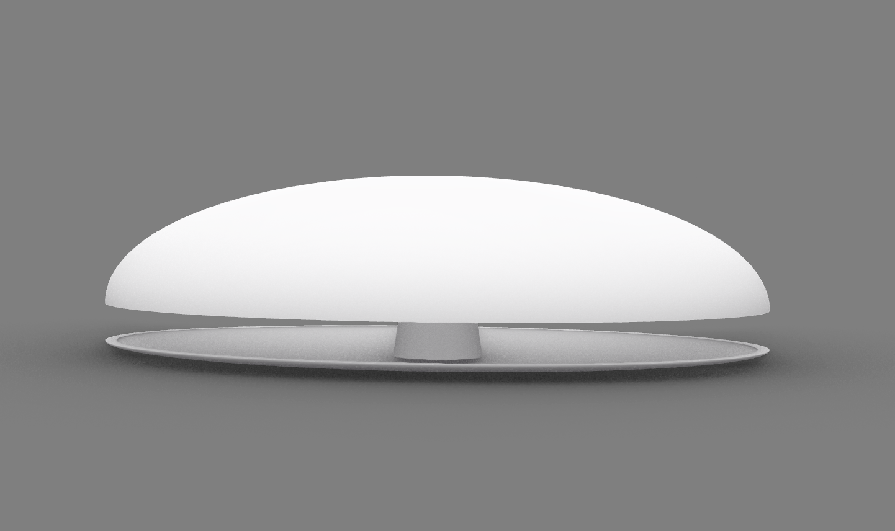

Project One
experimentations
These videos show how energetic a cat can be (zoomies)
Then we made a prototype to test the cat's reaction to something moving
Turns out that cats like something that moves very fast so we made changes to the code for it to be faster
Later we started planning for the model


But we ended up choosing a model that looks similiar to this
So we started making our model by using wood


To see the final project go back to the home page :)
go to home page